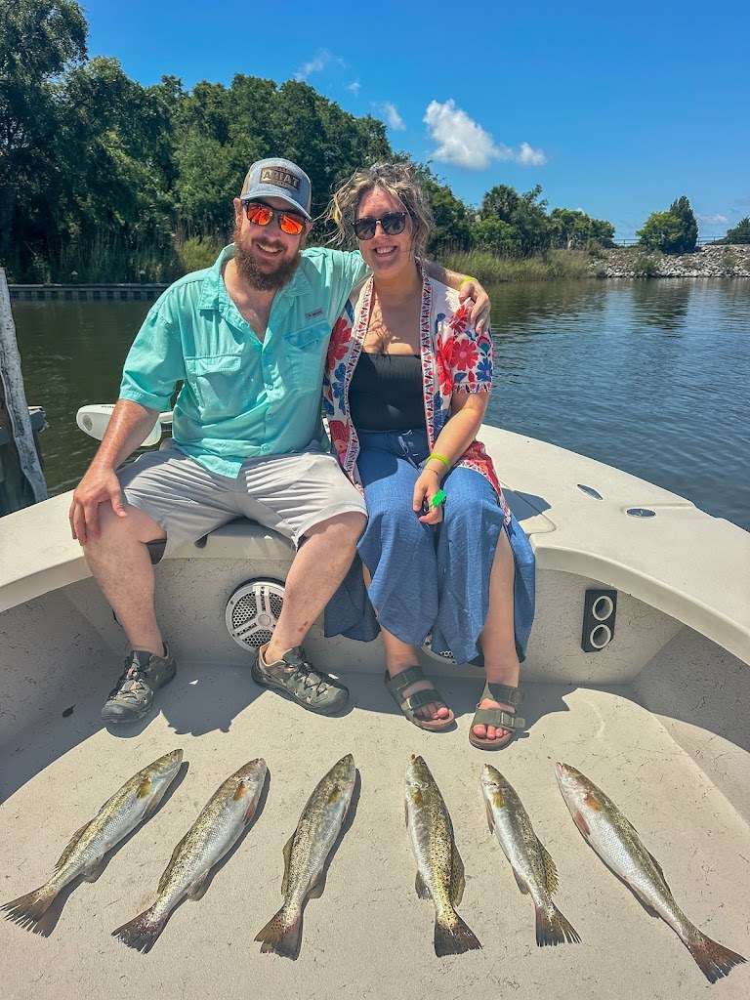
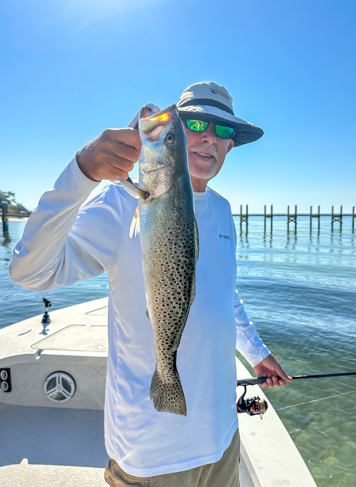

Visit Skunk Fishing
Inshore fishing charters with Captain Josh Hutchison: six-hour trips, weekday special $450.
100% Skunk Insured: if you do not catch fish, the trip is on us.
Gallery


Photos of Skunk Fishing: a dockside catch table, a couple on the bow, and a spotted seatrout.
Contact
Book a tripCall (346) 261-5339
Skunk Fishing serves Pensacola, FL. Questions? Call (346) 261-5339.